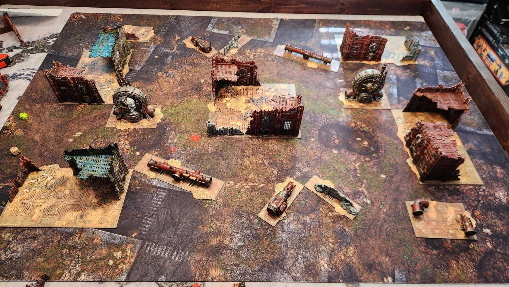
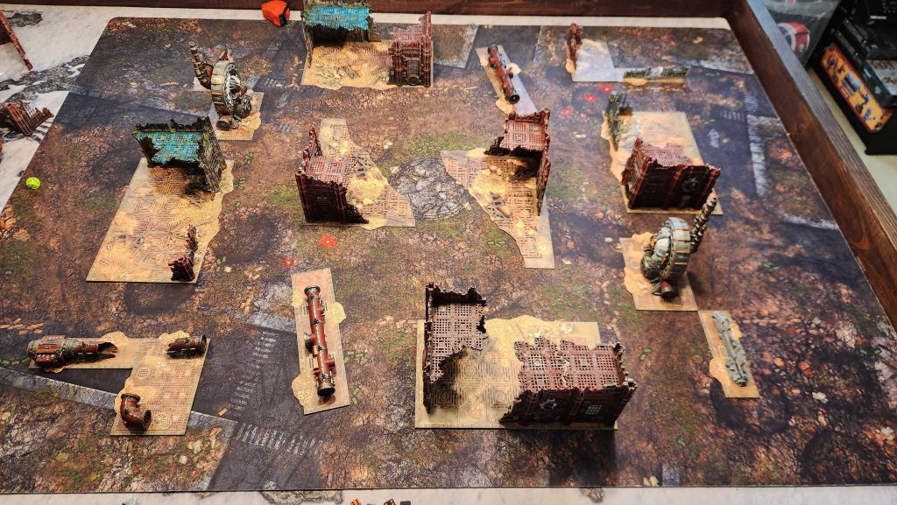
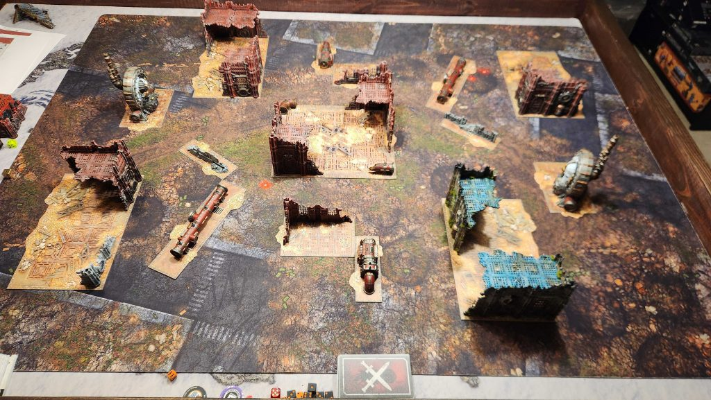
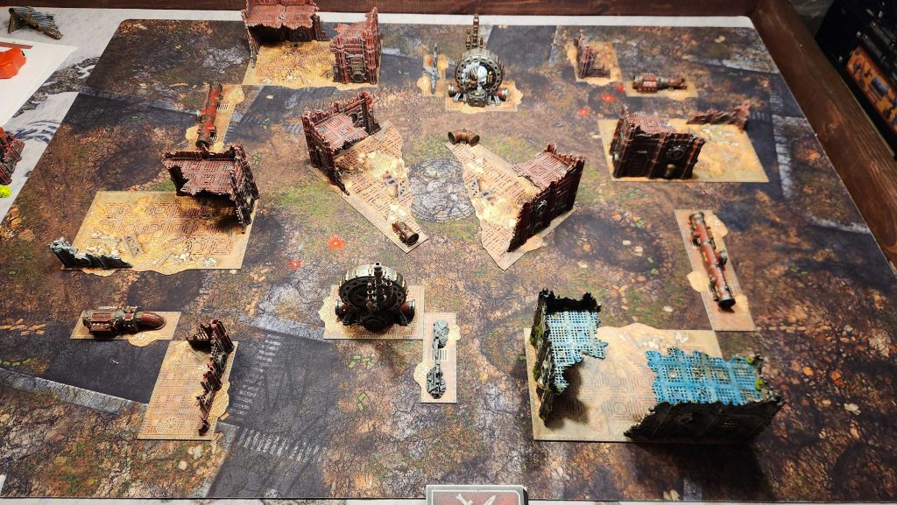

![[40k] 11th Edition Force Disposition Review: Reconnaissance](../assets/img/samples/news-v1-post-img-02.jpg)
[40k] 11th Edition Force Disposition Review: Reconnaissance
Reconnaissance is an objective-focused disposition, but in almost all instances, it removes the feeling of standard mid-board brawling. Instead of asking your perfectly-painted army to sit on a central point and take a beating, Recon rewards armies who make use of fast, mobile units that can efficiently fan out across the table, slip into the outer sections of the board, and consistently harvest primary points from the specific mission goals.
As we look over the missions, we find the majority of the time we aren’t just focused on holding our objectives, we are scoring our points via some dynamic movement mechanics. Whether we are running an action focused game of tag such as Surveil the Foe, in a race to who can put a token down first in Gather Intel, or simply playing table quarters in Reconnaissance Sweep, this disposition is all about actions and movement.
The missions place a heavy premium on your tactics and choices, rewarding you for picking off isolated units and keeping your action economy going. Fast, hyper-mobile MSU lists will thrive here; if you have the tools to re-position and nip at the opponents exposed screening pieces, you can rack up primary while leaving their more durable units fighting over objectives you don't need. Just be careful not to completely waste your own scoring units early for screens, or you’ll run out of the activations needed to continue your march to victory.
As with our other reviews, we'd like to thank Games Workshop for providing us with a preview copy of these rules for review purposes.
Matchup Evaluation
I’ll be scoring each matchup on the following 1-5 scores.
1 - This is a very bad matchup. The player has a big deficit in the ease of scoring primaries to overcome.
2 - This is a bad matchup. The player has a slightly harder time scoring maximum primary points.
3 - This is an even matchup. Either both players have the same mission (mirror match), or are roughly equal with regard to ease of scoring primaries.
4 - This is a good matchup. The player has a slightly easier time scoring max primaries.
5 - This is a very good matchup. The player has an extremely favorable set of objectives relative to their opponent.
Reconnaissance Sweep (vs Take and Hold)

Take and Hold vs. ReconnaissanceThis is a five-objective mission played on Tipping Point, Dawn of War, or Search and Destroy. With one objective in each home territory, and three across the center line, the deployment maps will drastically alter how you route your scoring units for this mission. Search and Destroy is the most deadly, as it’ll turn your game into a pressure cooker as you sacrifice units into your opponent's table quarter.
How You Score
This mission nearly detaches your primary from end of turn objective holding, instead focusing on being present in table quarters and attacking enemy units.
Table Quarters (End of your turn): You score 3VP if three or more friendly units are wholly within three different table quarters and not within 6” of the center of the battlefield. This can be increased to 6VP, if four or more friendly units are wholly within four different table quarters (and outside the bubble).
This is going to feel incredibly easy to score early on, outside of the Search and Destroy map. If our army has any semblance of cheap mobility, sneaking in small squads into corner pockets of the board means we can lock down a near effortless 6VP, though we can expect those units to be in quite a bit of danger. Hopefully, we can let the pressure off a bit with our next objective.
Unit Destruction (End of turn): You score 1VP for each enemy unit destroyed during your turn.
This may feel like pocket change at first, but it should scale well with what we are trying to accomplish. You don’t need to kill off Fateweaver or those Defilers to really benefit from this, anything will do! Scouts squads, Kroot Carnivores, or even the all powerful Spore-mine will count for this total and might add up quicker than you’d think.
Objective Control (End of your command phase, or end of battle if you’re second): If you control one or more objectives, excluding your home, you score 3VP.
This condition is going to feel a bit like an anchor compared to the freedom of the rest of the mission. It forces us to actually commit something to an objective in No Man’s Land, which means we will have to brace for a counter-punch to secure our 3VP.
A big scoring turn will simply look like securing a flat 6VP from our 4-quarter split, picking off two to three cheap enemy units, and holding a single expansion objective for a clean 11-12 point loop.
How Your Opponent Scores
Your opponent is playing a mission called Purge and Secure. This is a highly aggressive, reactive plan focused on flipping objectives and destroying units while they are on an objective, or while you were on one.
Objective Control (End of their command phase): From the Second Battle Round onwards, they score 4VP in their command phase (or the end of their round 5 if they went second) for each objective they control, excluding their home objective.
This is going to feel like a massive point production engine for them if you leave it unchecked. Because this rewards 4VP per objective straight up, they are looking at a quick 12 points a turn, as they challenge your own objective you need to hold.
Objective Flipping (End of turn): At the end of their turns, they score 3VP if they control one or more objectives that they did not control at the start of that turn (excluding their own home objective).
This is going to feel a bit frustrating to deal with. It rewards them for being aggressive and swinging into your territory, where you are also trying to hold a single objective every turn. With the fast cash in on 3VP, clearly there is an intent here for Recon to grab their objective points, just for them to take it back from you.
Objective-Linked Destruction (End of turn): At the end of any of their turns, they score 3VP if one or more enemy units were destroyed that turn by a friendly unit within range of an objective OR if one or more enemy units that started the turn within range of an objective were destroyed.
An incredibly natural objective for them to trigger. They don’t have to wipe out your army; they just need to pick off your scoring units that are sitting on an objective, or shoot you off the point using a unit of their own that is anchoring one of their own. It ensures that whenever combat happens where the points are, they have a good chance of getting those 3 points.
A standard clean run for them relies on aggressively pushing into No Man’s Land to flip a central objective, destroying one of our own expansion units in the process to lock down a quick 6VP at the end of the turn, before setting up for the 4VP per-objective in their following command phase.
Tips for Offense
Your table quarter scoring requires units to be wholly within a quarter and entirely clear of the center 6” zone; precise movement is going to be our biggest weapon for consistent points. You want to cascade cheap units (like Lone Operatives, small mounted squads, or even scouting infantry) into the outer board edges where you opponent cannot easily draw line of sight.
Since there are three mid-board objectives, your opponent is going to spread their forces to try and secure them to feed their Purge and Secure engine. Do not commit big damage dealers to shifting massive, durable units off these points unless its necessary. Focus your offensive output on wiping out their small screening units that may be sitting on flanks. Every single unit dropped gives you that sweet 1VP; hunting down their small MSU packages can yield an incredible pay off at the end of the game, as you make plays for your 6VP.
Your ideal mathematical path to a 45VP cap relies on aggressively locking in your 6VP from quarters every single player turn, while clipping a single enemy unit to grab that extra 1vp. If you can combine that with occasionally grabbing a single mid-board expansion during your command phase for VP, you will max out your primary track rapidly without ever needing to commit to a dangerous center-board grind. Get your 6 points five times. Kill two units a turn, and hold an objective in the middle twice, and you've got this.
Tips for Defense
Defending against Purge and Secure requires you to starve them of the interactions they need to get their own VPs. Your opponent wins big if they can flip objectives or kill your units while fighting over markers. To stop them from getting their 3VP end of turn “Objective Linked Destruction” bonus, you may need to deny them easy targets near objectives. If you have a staging unit near an objective, make sure they are benefitting from Hidden or positioned just outside of the objective range so your opponent can’t trigger that kill bonus.
You’ve got to do what you can to prevent them from triggering their 3VP end of turn flipping bonus. If you control an objective, make sure the unit you’re putting there is not a fragile, easily removed unit that allows them to effortlessly charge in, wipe you out, and flip the marker for a massive swing. If you can’t heavily secure an objective, it’s better to leave it vacant. If they are going to flip it, we want to try to avoid it happening from the effects of a charge move.
Tips for Listbuilding
To maximize your scoring in this environment, your army needs to lean heavily into hyper-mobility and high unit counts. Since your primary scoring engine is tied to spreading across all four table quarters, while also hunting down your opponent's weak units, you want to focus on the following tools:
- Infiltrators and Scouts: Units with pre-game movement will feel essential. Seeding them in the outer margins of the board during deployment ensures you can effortlessly secure three table quarters, while you push into the final quarter for the 6VP on the first turn.
- Lone Operative and Small Skirmishers: Small, independent footprints are your best friend. Taking these lightweight squads, or even some characters with protection from long-range fire allow you to tuck these scoring pieces away where your opponent cannot easily draw a line of sight.
- Dedicated Transports: If they kill one Rhino, you still have the unit inside to keep being in the quarter! Pinata tactics!
- One Tough Unit: You need *something* to hold an objective in the middle, and honestly, this is where having a unit who can just eat bullets for you, can help you out a lot. Think of a Norn Emissary here, maybe a unit of Terminators hanging out in terrain. All you need is one objective, and you can spoil some of our opponents' plans with these guys.
Matchup Evaluation
Score: 3.5This matchup sits at a very cool tactical crossroads. On paper, Recon has a massive advantage because your primary end-of-turn scoring is tied to board positioning rather than standing on those objectives. You will have to concede the more heavily defended mid-board objectives to them while still maxing out your 6VP quarter goal. However, this matchup doesn’t really cross into a 4 or 5 to me because Purge and Secure both give our opponent an immense reward for being aggressive.
Their mission dishes out points dynamically for killing things on objectives, taking new objectives for themselves, and a single misplay could leave one of your table quarter units exposed and push the points further towards our enemy. This mission rewards the Recon player who can maintain great positional intelligence, and if we can stay hidden with some sacrifice units to push into the most dangerous quarters, the math can swing heavily into our father. If you get sucked into a brawl in the middle, we will be playing right into their hands.
Triangulation (vs Purge the Foe)

Purge the Foe vs. ReconThis is a six-objective mission played on Hammer and Anvil, Dawn of War, or Crucible of Battle. The map layout places one objective in each deployment zone and four spread across No Man's Land. Having four central targets gives you plenty of space to fight over, but because your opponent is actively looking to hunt down your units on these objectives, the wide-open spaces will require you to make the most out of your movement phases.
How You Score
This mission relies on a slow-burn action economy combined with a massive late-game objective push.
Objectives (Command Phase): From the second Battle Round onwards, you score 4VP in your Command Phase (or the end of your turn in Round 5) if you control one or more objectives, excluding your home objective.
This is a pretty normal goal, it gives us a reliable 4VP foundation to build on every turn, as long as you can lock down your expansion objective.
The Triangulation Action
- Start: Your shooting phase, from the second battle round onwards.
- Units: One friend unit within range of one objective (excluding your home objective) that does not have any of your operations markers on it.
- Use Limit: Once per turn
- Completes: End of your turn, if you control that objective
- Effect: That objective becomes triangulated: place one of your operation markers within range of the objective.
This is going to feel like an absolute test of patience and resource management. The Triangulate action has a strict limit of once per turn, so you have to steadily build up your operation markers over multiple game rounds to hit those higher tiers of points, making your mid-game scaling a real uphill climb.
End Game Objective Flood: At the end of the battle, you score 10VP if you control four or more objectives total.
This is going to feel like a high-stakes, all-or-nothing final push. Since you’re usually playing an MSU or skirmish style, trying to suddenly control four different objectives at the very end of the game means committing every single warm body left alive to getting those points.
An ideal scoring loop in the mid-game involves maintaining your 4VP Command Phase baseline and steadily accumulating your Triangulation actions, being sure to get each of your escalating actions completed.
How Your Opponent Scores
Your opponent is playing the Consecrate mission. This rule mechanic requires them to kill your units while standing on objectives to permanently tag the objectives with your sweet innocent recon blood.
Objective Scoring (Command Phase): From the second battle round onwards, they score 4VP in their Command Phase if they control one or more non-home objectives, and an extra 4vp if they control more objectives than you.
This is a great passive engine for any player. Because your primary mission forces you to play slowly and execute your technical actions rather than just fighting for raw objective numbers, they can easily trigger their “Hold More” kicker for a nice 8VP every turn if you don’t keep them honest.
Consecration Mechanic (End of Turn): Each time a friendly unit destroys an enemy unit anywhere on the board, that unit becomes a "consecration unit." At the end of their turn, for each consecration unit, they can select one non-home objective that is within range of that hasn't been consecrated yet to place an operation marker down (they do not have to control this objective). They score 3VP if one or two objectives are consecrated, or 6VP if three or more are consecrated total.
This is going to feel incredibly oppressive. They don't need to fight you on your objectives to tag it; they can murder a fast skirmisher or a lone character out in the open ground, and as long as that killer unit finishes its turn touching an objective, they permanently lock that marker down as consecrated for an end-of-turn point spike.
Home Objective (End of Battle): At the end of the battle, they score a flat 5VP if your home objective is consecrated.
This is a looming late-game threat. If their heavy punchers successfully breach your deployment zone and drop one of your backline screens on top of your home objective, they walk away with a clutch 5VP endgame bonus.
A standard successful track for them relies on using their combat elements to wipe out your forward screens on the central objectives, consecrating No Man’s Land to snag a massive 11VP -14VP turn loop.
Tips for Offense
The absolute golden rule for this mission is that you must start the Triangulate action on Turn 2. Because the action rule states that it is limited to once per turn, any turn you skip pressing that button permanently caps your maximum scoring potential for the rest of the game. If you have the movement, use a fast skirmisher as a sacrifice to get the most dangerous objective out of the way early, doing your actions from least safe to most safe to maximize your ability to have this completed reliably by the end of the game.
Because your opponent is playing Consecrate, they want to kill your units. All your units. You may not be able to avoid this early on, as you need to get out onto objectives to complete your actions. Save your ultimate push for Turn 4 (or turn 5 if you went second), since you need to control four or more objectives at the end of the battle to claim that massive 10VP kicker, that is the exact moment to throw your entire remaining army forward to steal their home marker or flood the central objectives if you are feeling behind.
Tips for Defense
Defending against Consecrate means focus shifts heavily toward screening out access to the objectives entirely. Since they can pick up a kill anywhere and then move into range of an objective to drop the marker, you cannot stop them just by leaving the objectives empty. Like your action, they can only drop off one marker a turn. If you are able to stall this, even one turn, you’re on the way to victory.
Position your own units or screens slightly ahead of the objectives to create a physical wall, forcing their potential consecration units to stall out in No Man's Land before they can reach the scoring zone. Be extremely protective of your home deployment zone. Keep a cheap, wide-footprint unit stationed at your home objective, as you need to try and stymie off the threat of them scoring hold more.
Tips for Listbuilding
To win the tactical tug-of-war, fill your list with high-mobility assets and wide-footprint screeners:
- High-Speed Skirmishers: Units with massive movement characteristics, Scout rules, or pre-game moves will be perfect for setting up an early turn Recon action.
- Reactive move/Redeploy: Units that can move out of sequence or hop into strategic reserves are premier choices, letting you escape incoming combat pieces before they can generate a consecration token off of you. Keep in mind tactics like hidden, to keep your scoring infantry safe and moving.
- Hard-Hitting Trading Pieces: Fast, high-impact offensive units designed to trade up are critical. You need assets capable of immediately deleting your opponent's forward-deployers or light advanced units. By wiping out their vanguard pieces before they can claim a kill of their own, you completely stall their token delivery. They have to kill you, then deliver. Be aware that makes losing units in close combat very scary, as if they charge you on an objective they could use that kill as their easy delivery system.
Matchup Evaluation
Score: 2.5This matchup settles into a deadly 2.5 for our Recon hero. Both players are locked in a cage match where they are fighting to complete once-per-turn primary mission goals on the card, but the Purge the Foe player brings the raw, heavy-hitting scoring pieces to the table that a light, skirmishing Recon list simply won’t skew towards.
The incentives built into Consecrate drag the game into a brutal conflict. Your opponent has immense incentive to aggressively push their units straight onto the four mid-board objectives to satisfy their "Hold More" primary scoring. At the exact same time, the looming threat of their consecration tokens rewards them heavily for systematically hunting down and murdering your units anywhere on the battlefield. Purge the Foe gets to react to everything if they go second, which can also be incredibly deadly for our Recon hero.
Because your own Triangulate engine is strictly throttled to a slow, predictable once-per-turn use limit, you cannot out-pace their scoring via pure speed or sudden explosive turns. You are forced to clear the way for your action doers, trying to build a multi-turn action economy on the objectives while playing against one of the deadlier dispositions that is being actively paid in victory points to wipe your army off the face of the earth.
Gather Intel (vs Reconnaissance)

Recon vs. ReconThis is a five-objective mission played on Sweeping Engagement, Crucible of Battle, or Tipping Point. With one objective positioned in each home deployment zone, and three objectives that go across the center line, the map layouts dictate tight lanes of engagement. This forces mirror lists into immediate combat over the central points while trying to keep those flanks secure. What makes this a game is that it becomes a bit of a race to complete the mission unique action, Extract Intelligence. Each player will be trying to get in range of an objective in no mans land, and by completing an action will place a token on that terrain piece. You can do this action from the second turn onwards, with as many units as you have on objectives causing a player who wasn’t a little aggressive on their first turn to have to do some catching up.
How You Score
This mission requires a balance of early spatial positioning, some mid-game technical tasks, and late-game zone control.
First Battle Round Control (End of Turn): At the end of your turn in the first Battle Round, you score 6VP if you control one or more central objectives.
This is going to feel massive if you win the roll-off or pack up some fast scouts. Scoring the 6VP right out of the gate puts incredible pressure on the mirror to make sure they match your early points.
Objective Control (Command Phase): From the second Battle Round onwards, you score 4VP in the Command Phase (or the end of your turn in Round 5) if you control one or more objectives, not including your home objective.
This feels like a comfortable, standard check-box. As some of the three central objectives sit close to our territory, securing a stable point anchor on at least one expansion marker guarantees a solid foundational floor before our movement even starts.
Extract Intelligence Action (End of Turn): From the second Battle Round onwards, at the end of your turn, you score 7VP for each friendly unit that has successfully completed the Extract Intelligence action.
This is where each player will be making their points, but you need to be a little judicious about when you do it, as this is a mission where the 15VP/turn Primary limit will kick in if you're not careful. Even if the table is free and clear, you can't just rush out and do all three mid-board objectives turn 2, because you'd banish 6VP into the shadow realm, never to be retrieved. In any turn where you've successfully held an objective in your Command Phase, you'll waste a few points if you Action on two objectives. That doesn't always mean it's wrong to, because 6/15/11/4/4/5 (the 5 end-of-game) does still get you to 45, but keep it in the back of your mind (and definitely don't do three in a turn). Conversely, if your opponent ever denies you your 4VP Command Phase scoring, you are weapons free to Action two objectives and not have it be a waste.
Objective End Game Scoring: At the end of the battle, you score 5VP if three or more of your operation markers are on the battlefield, and an additional 5VP if one of your operation markers are within range of your opponent's home objective.
A nice little end game reward for doing what you already wanted to do. Pushing into their lines and dropping those permanent data tags to get a nice 5VP score (or 10VP if you got onto their home objective).
An ideal scoring loop for Battle Round 2 onwards involves holding an expansion objective in your Command Phase (4VP) and successfully executing an Extract Intelligence action on a secured point (7VP) for a nice 11VP baseline.
How Your Opponent Scores
Because this is a pure mirror match against a fellow Recon force, your opponent is playing the exact same mission under the exact same conditions.
First Battle Round Control (End of Turn): At the end of your turn in the first Battle Round, you score 6VP if you control one or more central objectives.
This will give us a feeling of a call and response dynamic. If they have the mobility to match your early deployment on those three central objectives, they will erase and early lead you may had and reset the math to victory.
Objective Control (Command Phase): From the second Battle Round onwards, you score 4VP in the Command Phase (or the end of your turn in Round 5) if you control one or more objectives, not including your home objective.
This will feel just as passive for them as it feels for you. If they can get a durable unit onto their own safe midboard expansion, they’ll have an identical base score to work with.
Extract Intelligence Action (End of Turn): From the second Battle Round onwards, at the end of your turn, you score 7VP for each friendly unit that has successfully completed the Extract Intelligence action.
This is their main engine too, which means they are going to be hunting for those exact same objectives and doing their best to push you off of them so they can get their own tokens out. Letting their action doers run wild will let them match your primary output, so we want to limit that as much as we can.
Objective End Game Scoring: At the end of the battle, you score 5VP if three or more of your operation markers are on the battlefield, and an additional 5VP if one of your operation markers are within range of your opponent's home objective.
This of course will be a looming threat as the game goes on. Their successes build them closer and closer to the very same end game scoring you’re looking for. If you leave your deployment zone vacant, or fail to screen your backlines, something will slip by and steal those points from right under your nose.
A standard scoring run for them will be mirroring your own. Battle Round 2 onwards involves holding an expansion objective in their Command Phase (4VP) and successfully doing the Extract Intelligence action on a secured point (7VP) for that same 11VP baseline.
Tips for Offense
The use limit on the Extract Intelligence action is unlimited across your phase, but each unit performing it must target a different objective that doesn’t already contain one of your operation markers. Because there are only three mid-board objectives to fight over alongside the enemy home base, the board can get crowded fast. You can not afford to fixate entirely on one objective; you want to continuously spread your units across the different center line objectives to get your 7VPs as quickly as possible, so you can free up your action doers for other secondaries.
Since your opponent is also looking for fresh targets to drop their own operation markers, use your fast damaging threats to aggressively clear those action doers, so if they do have the ability to pull off the action, it has to be with something that matters.
Tips for Defense
In a mirror match, objective denial is just as valuable as scoring. Because a unit can only start the Extract Intelligence action if the objective does not already have one of the player's operation markers within range, your opponent is constantly looking to expand to one of those untouched points across the center objectives. You can actively predict where their action doers are going to go.
Protect your own backline as well, since they are also able to get that end of game scoring for placing a marker within range of your home objective, making sure our cheap screening units are spaced out in your deployment zone to entirely block deep-strikers or fast scouts from getting within range of your home objective. If you can force them to waste time trying to get their actions done in the exposed central objectives, rather than letting them slip into the open points along the sides, you can utilize your shooting lanes to clean them off the table, keeping their movement from touching every objective.
Tips for Listbuilding
To win the efficiency race against an identical toolkit, your list needs a good handful of small disposable action doers:
- 12” Movers: Units of high-speed movement that can perform these actions are going to be at a premium, allowing us to react to open objectives on the opposite natural objective.
- Hyper Cheap MSU: You want multiple tiny, disposable squads. Their entire purpose is to get on that fresh marker, and get that 7VP action completed and draw fire away from your main fighting force.
- Backline Screeners: Units that can give us a good backfield footprint helps keep our denial active in our home objective to help protect us from that end of game scores.
Matchup Evaluation
Score: 3.0This is a dead-even 3.0 matchup evaluation, where structural advantages go out the window and pure play strategy can start to shine through. Both players have access to the same high efficiency point scoring, the game can become a bit of a puzzle of positioning and screen denial. Whoever manages their movement phase the best, screens out their home territory more tightly, and is effectively trading cheap units to stop the opponent’s Extraction actions will win this duel of points.
Surveil the Foe (vs Disruption)

Recon vs. DisruptionThis is a six-objective mission played on Tipping Point, Dawn of War, or Search and Destroy. The layout features one objective terrain piece in each player's deployment zone, and four distinct objective pieces spread across no man's land.
With this being one of the four objectives, it can completely dictate how we move to complete out mission. On a highly condensed map format like Search and Destroy, these objectives make the board feel more compressed. Your Disruption opponent is going to be mechanically driven to cross the center line to touch the terrain on your side, meaning you must do your best to protect your terrain via staging units to control the pacing of the battle.
How You Score
This mission forces an active recon playstyle where you have to clean up enemy tokens while tagging targets from a distance. I’ve been calling this mission Hide and Seek rather than its given name. To be able to score any points, you have to literally uncover your enemy from their hiding spot, then you do an action to tag them for some points.
The Surveil the Foe Action
- Starts: Your Shooting phase.
- Units: One friendly unit.
- Use Limit: Unlimited.
- Completes: Immediately.
- Effect: Select one enemy unit within 18" of and visible to your unit that has not been surveilled this turn: until the end of the turn, that enemy unit is surveilled.
- Restriction: You can not select an enemy unit who is on a piece of terrain that has an operation marker on it.
This turns your movement and shooting phases into a fun game within a game. Since the action is completely unlimited, multiple units can point at different targets. However, you have to watch out for where they are standing. If you tag an enemy unit that is nestled safely inside some terrain that holds a marker, your action won’t work and you’ll score nothing. What can we do about that?
Operation Marker Clearing (Any Phase): Each time a friendly unit ends a move within range of an objective piece that has any enemy operation markers on it, remove those operation markers from the battlefield.
This is incredibly important, for obvious reasons. It’s also a blessing that we don’t have to waste any action utility to clear a point; you just need to end a move (normal move, advance, charge, or a pile-in) within range of that objective terrain structure, and your scouts instantly sweep away their decoy markers.
Objective Scoring (Command Phase): From the second Battle Round onwards, you score 4VP in your Command Phase (or the end of your turn in Round 5) if you control one or more objectives, explicitly excluding your home objective.
Just some good ole standard scoring. Get out on those objectives, score some points.
Marker Dominance (End of Turn): At the end of your turn, you score an additional 5VP if none of your opponent’s operation markers are on the battlefield.
This is a great source of passive points. Our movement phase allows us to physically delete their decoys the moment you touch the terrain. Actively scrubbing the map clean before your turn wraps up, just keeps handing us 5VP every turn. Not only that, but if we are able to prevent them from making more, we still get more points!
An ideal scoring loop here involves holding a quiet flank terrain feature, using your movement to end a move on an enemy decoy to cleanse it, and pointing at any off their army that is within range to net a sweet 13VP a turn.
How Your Opponent Scores
Your opponent is playing the Smoke and Mirrors Mission. Their entire scoring engine relies on a decoy system designed to compromise the No Man’s Land.
Objectives (Command Phase): From the second battle round onwards, they score 4VP in their command phase if they control one or more objectives, excluding their home objective.
Hey look, more normal scoring processes. Nothing very complicated here.
Next, their main scoring actions are going to be around the following action:
The Decoy Action
- Starts: Your opponent's Shooting phase.
- Units: One friendly unit within range of one objective terrain piece (excluding their home objective) that is not decoyed.
- Use Limit: Unlimited, but each unit that starts this action in that phase must be within range of a different objective terrain piece.
- Completes: End of your opponent's turn, if their unit controls that objective terrain feature.
- Effect: That objective is decoyed: Place one of your operation markers within range of that objective terrain piece.
The decoy placement is their aggressive scoring battle. Planting decoy markers on an objective piece of terrain on your side of the table, quickly compounds into 4VP at the end of their turns.
End Game Decoys (End of Battle): At the end of the battle, they score a flat 10VP if four or more objectives are decoyed total.
If you let them steadily accumulate tokens across the four central terrain pieces over the course of the match without utilizing your scrubbing rule, they walk away with a big 10VP endgame right at the end of the game.
Tips for Offense
Your absolute priority in this mission is keeping the map clean. You score a flat 5VP at the end of your turn if none of their operation markers are left on the board, your movement phases should be treated as a focus on erasure. Use your high speed to cascade units onto any objective terrain features holding an enemy token. Merely ending any move within range will get that piece open, and simultaneously get you a 5VP bonus and keep working towards your late-game 10VP.
When executing the Surveil the Foe action, pay extremely close attention to enemy positioning relative to our objectives. Since you are strictly denied your 4VP tracking bonus if the target is sitting on an objective terrain feature that contains an operation marker, do not waste the action on their primary anvil units that are blocking terrain areas. Instead, keep focused on their late game units, to allow you space to work through our objectives. An interesting idea here is to try and keep some weaker units alive, so you can scan them turn after turn and get the most out of your points.
Tips for Defense
Defending against Smoke and Mirrors requires being active around the objectives to break up their action economy. Since the Decoy action requires them to maintain control of the objective until the very end of their turn to successfully place the marker, you can entirely deny their placement by contesting the point. Using fast counter-charges, high-OC models, or even some aggressive Battle-shock stratagems to flip control of the terrain piece during their turn means their action completely fails to complete.
Their decoys yield double the points when placed on your side of the table, you want to intercept their forward elements before they can touch the physical terrain pieces on your half of the board. When it is their turn to move, they will try to park units inside to use engagement range blocking to stop your units from completing movement onto these objectives. If you know you cannot physically reach a terrain piece to scrub it on your next turn, use the Surveil the Foe action defensively from 18" away on a unit that is moving between terrain zones. By tagging their action units early, you can try to secure your points regardless of how heavily they fortify their marked terrain.
Tips for Listbuilding
To fully play this game of tag across the new layouts, tailor your lists with speed and units that can complete actions:
- High-Speed Sweepers: Units with 12” movement characteristics, uppy-downy rules, or Fly are incredible. They can easily bypass enemy models to end a move within range of an objective terrain feature, automatically deleting enemy markers.
- Cheap, Throwaway Skirmishers: You want multiple lightweight units that can advance or charge purely to trigger the "end of a move" clause on the physical terrain, scrubbing tokens without risking your heavy damage dealers.
- 18" Vision Elements: Small, inexpensive infantry units or lone operators with good defensive rules (like Lone Operative) are perfect for sitting safely in cover while utilizing the unlimited Surveil the Foe action to spot targets from 18" away.
Matchup Evaluation
Score: 4This matchup swings to a highly favorable 4 for the Recon player. Your primary mission card arms you with a rule to instantly delete their hard-earned operation markers just by ending a move near the objective terrain pieces, you can dominate the strategic pacing of the game. You can systematically deny their cumulative scoring, turn their forward movement into a predictable shooting-phase trap, and cash in on 5VP round after round just for cleaning up the terrain layout. As long as you keep your units mobile and diligently scrub their decoys off the terrain features, their primary game will starve out and let you focus on other aspects of the game.
Search and Scour (vs Priority Assets)
 Priority Assets vs. Reconnaissance
Priority Assets vs. ReconnaissanceThis is a five-objective mission played on Crucible of Battle, Sweeping Engagement, or Tipping Point. The specific deployment lines for this mission map out a battlefield with one objective in each deployment zone, and three objectives spaced evenly through the middle of No Man’s Land.
With a total of five objectives on the table, the central row of three terrain features serves as the frontline of the game. On a highly angled layout like Sweeping Engagement, this objective array forces an immediate, intense focal point right down the edge of the board. Because your opponent must cross this line to do their missions in your territory, these three central objectives will host the most critical combat trades of the game.
How You Score
This mission emphasizes holding central ground and flushing the enemy out of cover while tracking down specific forward areas.
Central Objectives (End of Turn): In any battle round, you score 3VP at the end of your turn if you control one or more central objectives.
This is a normal baseline objective that we’ve seen in most missions. It’ll reward us for keeping a steady presence on the mid-board terrain features and pressure on our enemy.
Terrain Clearance: In any battle round, you score 2VP at the end of your turn if one or more enemy units that started that turn within a terrain area are destroyed.
This encourages high-aggression clearance. You don’t need to wipe out their entire army; just identifying a unit that is hanging out in terrain and deleting it before the phase ends gets us a nice little point bonus.
Objective Scoring (Command Phase): From the second Battle Round onwards, you score 4VP in your Command Phase (or the end of your turn in Round 5) for each objective you control, explicitly excluding your home objective.
This is your primary score scaler. It pushes higher for very expansion objective you hold, being to even hold onto two of them in your Command Phase can keep pushing our score higher while reinforcing our board control.
Territorial Cleansing (End of Battle): At the end of the battle, you score a flat 5VP if no enemy units are wholly within your deployment zone.
A tough end-game scoring goal. It demands that you systematically push back or eliminate any lingering enemy units from your half of the table before your final dice are rolled.
An ideal scoring turn loop for us is holding two central objectives in your Command Phase (8VP), maintaining control of at least one of your turns (3VP), and killing an enemy squad in a ruin for a cool (2VP) could score us a great 13VP a turn.
How Your Opponent Scores
Your opponent is playing Vanguard Operation. Their scoring gameplan focuses on infiltration, raw unit destruction, and a deep-strike push to capture your backline. All stemming from this action:
The Vanguard Operation Action
- Starts: Your opponent's Shooting phase.
- Units: One friendly unit within one terrain area that is within enemy territory.
- Use Limit: Once per turn.
- Completes: End of your opponent's turn, if no enemy units are within that terrain area.
This is a score that is going to grow as they push units onto the central objective or your side of the table. To complete this action, they’ll have to sneak into terrain you're also contesting, and they need to fully clear it out in order to do what they need, which can be especially steep if they're pushing for your Expansion.
Kill a Unit (End of Turn): They score an additional 2VP at the end of their turn if one or more enemy units were destroyed.
Play the game, get points. Every mission has these kinds of things on them and this detachment is no different. They need something to get those points, as you can do some real counter play to their primary way to score.
Objective Play (Command Phase): From the second battle round onwards, they score 4VP in their command phase if they control one or more objectives, excluding their home base.
More classic scoring.
Home Capture (End of Battle): At the end of the battle, they score a 10VP if they control your home objective.
A deadly end game goal, but it works with what the PA player is trying to do, push push push. This is one of the most aggressive play styles PA will demonstrate, and they are going to fight for every inch.
Tips for Offense
Your offensive output needs to be focused heavily on terrain clearance and also making sure you are keeping units on terrain to stop their action. You will score an extra 2VP at the end of your turn for destroying any enemy unit that started the phase inside a terrain area, and of course your opponent will be flinging units onto terrain. Use high-volume shooting or heavy assault units to flush those units off of the terrain to maximize your points and threaten theirs directly.
Since their primary action is strictly limited to once a turn and requires a terrain feature to be entirely clear of your models, you can disrupt their scoring with only the investment of your models. Large model count units, durable tanks, or aggressive counter-charging units will help fight back anything that is trying to operate on your side of the table. All you need is one model left by the end of their shooting phase, and that action was stopped and steals 4VP from their end total.
Tips for Defense
With only three mid-field objectives available on these map setups, controlling the mid-board requires less spreading out and you can focus on counter charges and making sure your units are getting in your opponent's way. Defending against the Vanguard Operation requires the removal of their backfield attacking units; look to knock down uppy downy units as fast as possible and be as aggressive as your opponent is. If you have access to units with improved Detection Ranges, toeing them onto the corner of the Central Objective can also be strong, as this can be annoying for the enemy to remove and will shut off scoring if they don't.
Tips for Listbuilding
To efficiently secure primary points while choking out their threats across a 5-objective layout, look to tailor your list with high-volume damage and zoning options:
- Terrain Bullying Units: Units that ignore cover, possess high-volume blast weapons, or excel at close-quarters melee are great choices here. They allow you to reliably dig out and destroy enemy units hiding inside terrain to guarantee your 2VP every turn.
- Inexpensive Zoning Screens: Take cheap infantry squads or dedicated screening pieces with large footprints. Their primary job is to sit inside the terrain features on your half of the table, turning those cover pieces into dead zones for the enemy's actions. Even a single 20-man unit may be all you need to accomplish this disruption.
- High-OC Mid-board Anchors: Highly durable blocks with excellent Objective Control characteristics are super important. With only three central terrain features up for grabs, having elite, heavy-OC units means you can firmly capture and hold the frontline during the Command Phase to maximize your 4VP-per-objective scaling engine. Some tanks have a high OC that could do this, or a unit of terminators with an Ancient could also be great for the matchup.
Matchup Evaluation
Score: 4.0This matchup settles into a commanding 4.0 for the Recon player. On the mission's structural level, your scoring path works in an aggressive, table control playstyle. The map layouts force the action through the three central objectives, and you can confidently commit your primary forces to bully frontlines, throwing back the incoming waves of units who are trying to complete their actions. Their forward units are essentially forced to move into your scoring goals, giving you those easy 2VPs every turn.
The only real reason we don’t see this as a blowout, is the unique nature of the Priority Assets action. Your opponent doesn’t actually need to capture objectives to score; they just need to make sure you’re not present on the piece of terrain on your half of the table. If your defensive line slips, they can sneakily flip that 4VP switch. As long as you maintain a reasonable goal of playing aggressive, you should be able to dictate engagements and run away with the scoreboard.
Editor's Note: We had this as a 3 when looking it from the PA side, and this one ends up varying quite a bit depending on what sort of army you're visualising when playing this. The PA side does have a slight scoring advantage turn-to-turn if both players achieve their goals, but they're compelled to push a bit harder to keep that flowing, so it depends on how well the Recon player can exploit that.
Final Thoughts
Overall Strength of Force Disposition: 3.5What a ride huh? With all five missions accounted for, the Reconnaissance Disposition emerges with a final average of 3.5/5 (or 3.3 if you use take a 3 for the PA matchup). This is a solid average position that we feel matches the archetype of play that Recon lends itself to. Board control, actions, and being active on the table. When paired against other action heavy forces, the tools encouraged in your list building should shine through. On the other hand, heavy haymaker fights like against Purge the Foe will act as a severe list check, turning a fragile mobile MSU build into an easy primary scoring harvest for our enemies. Ultimately, success will come down to your movement phases and your ability to dictate engagements. If you can manage a strong unit trade economy and keep your action pieces safely hidden, you should come out on top!
Have any questions or feedback? Drop us a note in the comments below or email us at contact@tabletopbattles.com. Want articles like this linked in your inbox every Monday morning? Sign up for our newsletter. And don't forget that you can support us on Patreon for backer rewards like early video content, Administratum access, an ad-free experience on our website, and subscriber-only content covering competitive Warhammer 40K!
Originally published on Goonhammer.


Leave a Comment